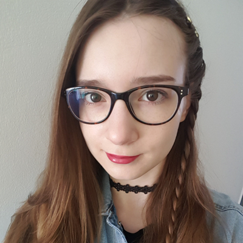

About
I enjoy streaming art-tutorials and working together with others on various projects. Recently I started a Ko-fi to create a place to share more of my work with you, including finished artworks and educational materials.
The things I love to paint the most are adorable animals, captivating characters, tiny towns and peaceful panoramas. Also, I am experimenting with animation and explore different possibilities to create something new!